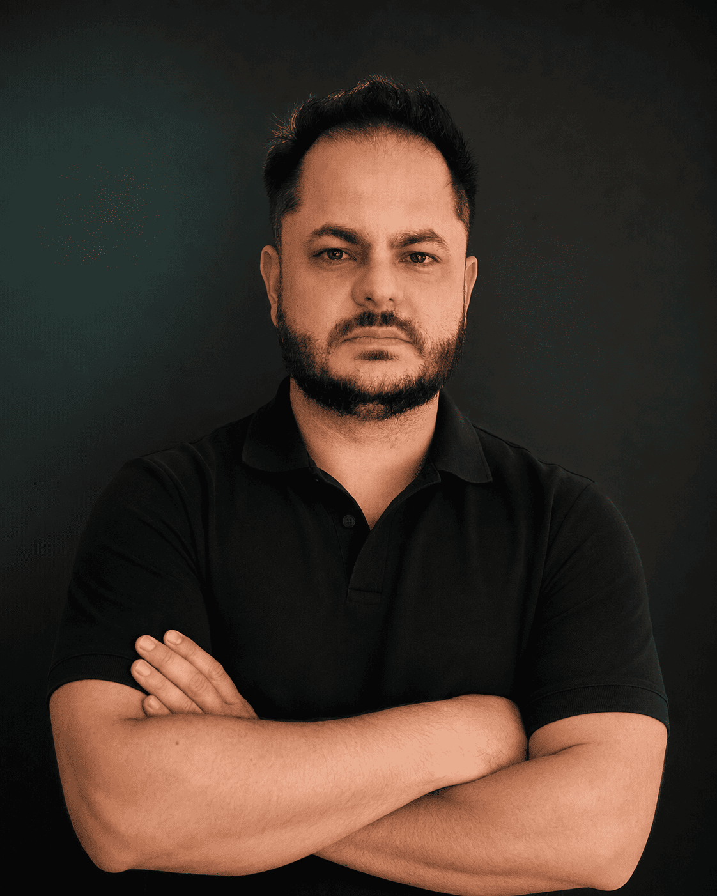

Software e sistemas empresariais
Desenvolvimento de componentes, regras de negócio, APIs e funcionalidades de sistemas corporativos. Experiência em Dynamics 365, CRM e ERP.
C# · .NET · Python · JavaScript · SQL Server
O Engenheiro de Resultado
Engenharia de software, integrações e IA para conectar sistemas e melhorar processos empresariais.
Dynamics 365 · Azure · Python · Microsoft Foundry
Explore minha atuação
Profundidade técnica, aprendizado contínuo e compromisso com informações confiáveis.
Sou engenheiro de software e Senior Dynamics 365 Engineer na Microsoft, com aproximadamente 22 anos em tecnologia e 15 anos no ecossistema Microsoft.
Minha experiência reúne desenvolvimento, arquitetura de soluções, integrações empresariais e liderança técnica. Trabalho com C#, .NET, Python, JavaScript e SQL, conectando sistemas corporativos, serviços em nuvem e Inteligência Artificial.
Na engenharia de IA, atuo com LLMs, RAG, agentes e Microsoft Foundry, integrando modelos a dados, ferramentas e processos empresariais. Combino essa atuação com a experiência em Dynamics 365 e Azure para construir soluções que façam sentido dentro da operação.
Do código à arquitetura, dos dados à IA: experiência para conectar tecnologias aos processos que sustentam uma empresa.
Desenvolvimento de componentes, regras de negócio, APIs e funcionalidades de sistemas corporativos. Experiência em Dynamics 365, CRM e ERP.
Integração entre Dynamics 365, SAP, ERPs e sistemas legados para conectar dados, automatizar processos e sustentar a comunicação entre aplicações.
Construção de aplicações com modelos de linguagem, recuperação de informações em bases de conhecimento e agentes conectados a ferramentas e sistemas.
Liderança técnica, revisão de código e gestão do ciclo de vida das aplicações. Governança de ambientes, implantação automatizada e monitoramento.
Comecei atendendo clientes no meu próprio negócio. Evoluí para o desenvolvimento de software, a arquitetura de soluções e a aplicação de IA em sistemas empresariais.
Aos 18 anos, abri uma lan house que evoluiu para uma loja de informática. Durante oito anos, vivi os desafios de atender clientes e administrar um negócio — e financiei minha graduação em Ciência da Computação.
Passei a desenvolver sistemas para operadoras de planos de saúde, aprofundando minha experiência em C#, .NET e SQL Server. Trabalhei em funcionalidades, integrações e melhorias de relatórios que apoiavam a operação e a gestão.
Na consultoria, comecei com Dynamics AX e X++, depois avancei para Dynamics CRM, Power Platform e Azure. Conquistei certificações e assumi responsabilidades de arquitetura e liderança técnica, conectando ERPs, APIs e sistemas empresariais.
Após essa trajetória de projetos e entregas, fui convidado a integrar a Microsoft como Senior Dynamics 365 Engineer. Hoje, trabalho com desenvolvimento, arquitetura e integrações, aplicando também IA à evolução de processos e soluções empresariais.
IA sem hype
Eu combato a IA de vitrine: impressionante na apresentação, mas frágil quando encontra dados, usuários, regras de negócio e sistemas reais.
Uma solução precisa ter um problema bem definido, integrar-se aos sistemas existentes e permitir avaliar qualidade, custo e falhas. Em aplicações de IA, isso também exige verificar respostas, delimitar permissões e definir quando uma pessoa deve intervir.
Tecnologia é o meio.
Resultado é o produto.